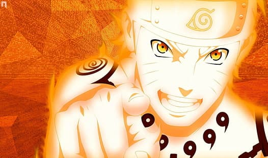
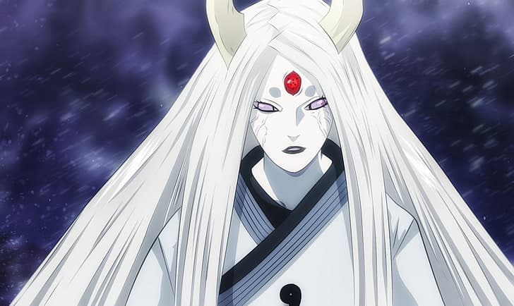

-
Учи́ха Ита́чи
Учи́ха Ита́чи — гений клана Учиха из Конохагакуре. Он стал международным преступником после уничтожения всего своего клана, оставив в живых только младшего брата Саске. Впоследствии, он присоединился к преступной организации, известной как Акацки, чья деятельность привела его к частым конфликтам с Конохой и её ниндзя, включая Саске, стремящегося отомстить за свой клан. После его смерти мотивы Итачи оказались куда более сложными, нежели казались на первый взгляд, и все его действия были направлены на благо его брата и деревни, в связи с чем он оставался верным шиноби Конохагакуре до самого конца.
-

Узума́ки Нару́то
Узума́ки Нару́то — шиноби Конохагакуре из клана Узумаки. Он стал Джинчурики Кьюби в день своего рождения, в результате чего, из-за нелёгкой судьбы, другие жители деревни сторонились его в течение детства мальчика. Присоединившись к команде 7, Наруто начал упорно трудиться, чтобы добиться признания в Конохе и, тем самым, воплотить свою мечту стать Хокаге. В последующие годы, благодаря большому количеству пережитых трудностей и испытаний, Наруто стал высококвалифицированным шиноби, которого жители деревни признали своим героем. В дальнейшем Наруто стал одной из главных причин победы в Четвёртой мировой войне Ниндзя и реализовал свою мечту, став Нанадайме Хокаге.
-

Отсутсу́ки Ка́гуя
Отсутсу́ки Ка́гуя — матриарх клана Отсутсуки, мать Отсутсуки Хагоромо и Хамуры. Задолго до основания Какурезато, в эпоху бесконечных войн, Кагуя вкусила запретный плод Шинджу и стала первым человеком в мире, овладевшим чакрой. Впоследствии, её слияние с Божественным древом привело к созданию Джуби.
-
Учи́ха Са́ске
Учи́ха Са́ске — один из последних выживших членов клана Учиха из Конохагакуре. После того, как его старший брат Итачи уничтожил весь их клан, Саске поставил перед собой жизненную цель отомстить за клан и семью, убив Итачи. Он попадает в команду 7. Недовольный своим прогрессом, он покидает Коноху, чтобы обрести силу, необходимую для осуществления мести. За годы Саске становится международным преступником. Узнав правду о своём старшем брате, Саске переосмысливает свою жизнь и играет одну из ключевых ролей в окончании Четвёртой мировой войны Ниндзя, а когда Наруто окончательно избавляет его от ненависти, он решает вернуться в Коноху и посвящает свою жизнь защите деревни и её жителей.
-
Учи́ха Мада́ра
Учи́ха Мада́ра — легендарный лидер клана Учиха. Он основал Деревню Скрытого Листа вместе со своим другом и соперником, Хаширамой Сенджу, с намерением положить начало мирной эпохе. Когда они двое разошлись во взглядах, как именно достичь этого мира, то сразились за главенство над деревней в битве, которая завершилась смертью Мадары. Тем не менее, впоследствии, он инсценировал свою смерть и отправился в изгнание, чтобы продолжить работу над своим планом. Будучи не в состоянии осуществить свои намерения на протяжении своей естественной жизни, Мадара передал свои знания и амбиции Учиха Обито незадолго до своей настоящей смерти.Годы спустя, Мадара был воскрешён, но, в конечном итоге, его план потерпел фиаско, прежде чем тот окончательно умер.
-
Нагато
Нагато — шиноби Амегакуре и потомок клана Узумаки. Сформировав Акацки вместе со своими друзьями (и другими сиротами войны) Яхико и Конан, Нагато мечтал принести мир на жестокую землю шиноби. Тем не менее, после смерти Яхико, Нагато начал действовать под псевдонимом Пейн (ペイン) и вместе с Конан возглавил новых Акацки. С этого момента, его главной целью стало установление мира любыми необходимыми средствами.
-
Учиха Обито
Учиха Обито — представитель клана Учиха из Конохагакуре. Долгое время считалось, что он погиб во время Третьей мировой войны Ниндзя. Незадолго до своей мнимой смерти, он передал своему товарищу по команде Хатаке Какаши Шаринган, наследие клана Учиха. Как оказалось, Обито был спасён от смерти и обучен Учиха Мадарой, однако события войны глубоко повлияли на мировоззрение Обито. Разочаровавшись реальностью, он перенял от Мадары идею по созданию идеального мира. Выступая под именем Тоби и самого Учиха Мадары, Обито взял под контроль организацию Акацки, что в конечном итоге привело к Четвёртой мировой войне Ниндзя. Тем не менее, под конец войны, Обито пересмотрел свои взгляды и совершил самопожертвование в знак искупления, чтобы спасти мир, который он когда-то отверг.
-
Орочимару
Орочимару — один из Денсетсу но Саннин Конохагакуре. Будучи одержимым разгадать все тайны этого мира, Орочимару стремился найти путь к бессмертию, так как считал, что одной человеческой жизни ему недостаточно. Когда Орочимару был пойман с поличным за проведением запрещённых экспериментов над человеческими жизнями, Саннину пришлось покинуть деревню. Он создал Отогакуре, и основал собственную криминальную империю, обзаведясь талантливыми приспешниками. В течение долгих лет мечтою Орочимару было уничтожение Конохи, однако, пережив несколько случаев явной смерти во время стремления к своей цели, Орочимару на примере Якуши Кабуто, своего прежнего помощника, понял, что его подход был ошибочным, и начал наблюдать за выборами и действиями своего бывшего ученика, Учихи Саске.